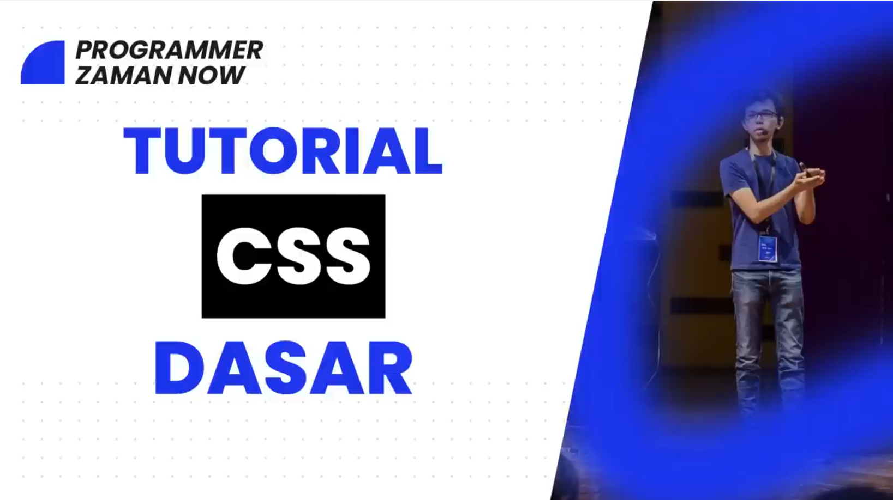

HTML
HTML adalah singkatan dari HyperText Markup Language, yaitu sebuah bahasa markup standar yang digunakan untuk membangun struktur dasar dari halaman web. HTML bukan bahasa pemrograman, melainkan bahasa yang berfungsi untuk memberi tanda atau struktur pada konten sehingga browser dapat memahami bagaimana konten tersebut harus ditampilkan kepada pengguna. Ketika kamu membuka sebuah website, apa yang sebenarnya terjadi adalah browser membaca file HTML, kemudian menerjemahkannya menjadi tampilan visual berupa teks, gambar, video, tombol, dan berbagai elemen lain yang bisa kamu lihat dan interaksikan. Konsep dasar HTML berpusat pada elemen dan tag. Elemen adalah bagian penyusun halaman, sedangkan tag adalah penanda yang digunakan untuk membungkus konten agar memiliki arti tertentu. Sebagian besar tag HTML terdiri dari pasangan tag pembuka dan tag penutup, di mana konten berada di antara keduanya. Tag pembuka memberi tahu browser bahwa sebuah elemen dimulai, dan tag penutup menandakan bahwa elemen tersebut berakhir. Struktur ini membuat HTML bersifat hierarkis, artinya elemen bisa berada di dalam elemen lain, membentuk semacam pohon struktur yang disebut DOM atau Document Object Model. Setiap dokumen HTML biasanya dimulai dengan deklarasi doctype yang berfungsi memberi tahu browser versi HTML yang digunakan. Setelah itu terdapat elemen root bernama html yang membungkus seluruh isi halaman. Di dalamnya terdapat dua bagian utama yaitu head dan body. Bagian head berisi informasi yang tidak langsung ditampilkan ke pengguna seperti judul halaman, metadata, link ke file CSS, atau script tertentu. Sedangkan bagian body berisi semua konten yang benar-benar terlihat di layar seperti teks, gambar, video, dan elemen interaktif. HTML menyediakan berbagai jenis elemen dengan fungsi yang berbeda-beda. Ada elemen untuk teks seperti heading yang digunakan untuk judul dengan tingkat kepentingan berbeda, paragraf untuk menulis teks biasa, serta elemen penekanan seperti bold dan italic. Ada juga elemen untuk struktur seperti div dan div yang digunakan untuk mengelompokkan konten. Selain itu, terdapat elemen media seperti img untuk gambar, video untuk video, dan audio untuk suara. HTML juga mendukung pembuatan tautan menggunakan elemen anchor yang memungkinkan pengguna berpindah dari satu halaman ke halaman lain melalui hyperlink. Selain elemen, HTML juga memiliki atribut yang berfungsi memberikan informasi tambahan pada elemen. Atribut biasanya ditulis di dalam tag pembuka dan terdiri dari pasangan nama dan nilai. Contohnya adalah atribut href pada elemen anchor untuk menentukan tujuan link, atau src pada elemen gambar untuk menentukan sumber gambar. Atribut ini sangat penting karena tanpa atribut, banyak elemen HTML tidak akan berfungsi secara maksimal. HTML modern juga memperkenalkan konsep semantic markup, yaitu penggunaan tag yang memiliki makna yang jelas terhadap isi konten. Contohnya seperti header, footer, article, dan nav. Penggunaan elemen semantik ini membantu mesin pencari dan developer lain memahami struktur halaman dengan lebih baik, sekaligus meningkatkan aksesibilitas bagi pengguna yang menggunakan alat bantu seperti screen reader. Dalam praktiknya, HTML hampir selalu digunakan bersama CSS dan JavaScript. HTML bertugas mengatur struktur, CSS mengatur tampilan atau desain seperti warna, ukuran, dan layout, sedangkan JavaScript mengatur interaktivitas seperti klik tombol, animasi, dan perubahan konten secara dinamis. Tanpa HTML, CSS dan JavaScript tidak memiliki fondasi untuk bekerja karena tidak ada struktur yang bisa dimodifikasi atau ditampilkan. HTML juga bersifat statis secara default, artinya konten yang ditulis akan tampil apa adanya tanpa perubahan kecuali dimodifikasi oleh JavaScript atau dihasilkan secara dinamis oleh server. Namun meskipun terlihat sederhana, HTML adalah fondasi utama dari seluruh web modern. Semua website, dari yang paling sederhana hingga yang paling kompleks seperti media sosial atau aplikasi web besar, tetap bergantung pada HTML sebagai struktur dasar. Seiring perkembangan teknologi, HTML terus diperbarui dengan versi terbaru seperti HTML5 yang membawa banyak fitur baru seperti dukungan multimedia tanpa plugin tambahan, elemen canvas untuk menggambar grafik, serta API untuk berbagai kebutuhan seperti penyimpanan lokal dan geolokasi. Pembaruan ini membuat HTML semakin kuat dan mampu menangani kebutuhan web modern tanpa terlalu bergantung pada teknologi eksternal. Kesimpulannya, HTML adalah tulang punggung dari dunia web. Ia tidak terlihat rumit di awal, tetapi memiliki peran yang sangat besar dalam menentukan bagaimana sebuah halaman disusun dan dipahami. Jika kamu ingin serius di bidang teknologi khususnya web development, maka memahami HTML secara mendalam bukan pilihan, tapi kewajiban. Tanpa pemahaman yang kuat tentang HTML, semua hal lain seperti styling dan scripting akan terasa tidak stabil karena kamu tidak benar-benar mengerti fondasi yang kamu bangun. selengkapnya...
CSS

CSS adalah singkatan dari Cascading Style Sheets, yaitu bahasa yang digunakan untuk mengatur tampilan dan desain dari halaman web yang dibangun dengan HTML. Jika HTML berfungsi sebagai kerangka atau struktur, maka CSS adalah lapisan yang mengatur bagaimana struktur tersebut terlihat oleh pengguna, mulai dari warna, ukuran, jarak, posisi, hingga animasi. Tanpa CSS, halaman web hanya akan tampil sebagai teks polos yang tidak menarik dan sulit digunakan. CSS bekerja dengan cara memilih elemen HTML lalu menerapkan aturan gaya pada elemen tersebut. Aturan ini terdiri dari selector dan declaration. Selector menentukan elemen mana yang akan dipengaruhi, sedangkan declaration berisi properti dan nilai yang menentukan perubahan apa yang akan diterapkan. Misalnya kamu bisa mengubah warna teks, ukuran font, atau jarak antar elemen hanya dengan menuliskan aturan CSS tertentu. Sistem ini membuat pemisahan antara struktur dan tampilan menjadi jelas, sehingga kode lebih rapi dan mudah dikelola. Konsep penting dalam CSS adalah cascading atau pewarisan prioritas. Ketika ada beberapa aturan yang menargetkan elemen yang sama, CSS memiliki sistem untuk menentukan aturan mana yang akan digunakan. Hal ini dipengaruhi oleh urutan penulisan, tingkat spesifisitas selector, dan penggunaan aturan khusus seperti important. Inilah alasan kenapa kadang sebuah style tidak bekerja, bukan karena salah, tetapi karena kalah prioritas. CSS juga memiliki konsep inheritance di mana beberapa properti secara otomatis diwariskan dari elemen induk ke elemen anak. Contohnya warna teks biasanya akan mengikuti warna dari parent kecuali diubah secara spesifik. Ini membantu mengurangi penulisan kode berulang, tetapi juga bisa membingungkan jika tidak dipahami dengan benar. Dalam hal tata letak, CSS berkembang sangat jauh dibandingkan versi awalnya. Dulu layout banyak menggunakan teknik yang tidak ideal seperti float atau tabel, tetapi sekarang sudah ada sistem modern seperti flexbox dan grid yang memungkinkan pengaturan layout menjadi jauh lebih fleksibel dan terstruktur. Dengan flexbox kamu bisa dengan mudah mengatur posisi elemen secara horizontal atau vertikal, sedangkan grid memungkinkan pembuatan layout dua dimensi yang kompleks dengan kontrol yang sangat presisi. CSS juga mendukung responsive design, yaitu kemampuan untuk membuat tampilan web menyesuaikan ukuran layar perangkat. Ini dilakukan dengan media query yang memungkinkan kamu menerapkan style berbeda berdasarkan kondisi seperti lebar layar. Tanpa ini, website akan terlihat berantakan di perangkat mobile. Selain itu, CSS memiliki banyak fitur lanjutan seperti transformasi, transisi, dan animasi yang memungkinkan elemen bergerak atau berubah secara halus. Ada juga variabel CSS yang memudahkan pengelolaan nilai yang sering digunakan, serta pseudo-class dan pseudo-element yang memungkinkan styling berdasarkan kondisi tertentu atau bagian spesifik dari elemen tanpa perlu menambah HTML. Cara penggunaan CSS sendiri bisa dilakukan dengan beberapa metode, yaitu inline langsung di dalam tag HTML, internal di dalam tag style pada bagian head, atau external melalui file terpisah yang dihubungkan ke HTML. Cara terbaik dalam praktik nyata adalah menggunakan file external karena membuat kode lebih terorganisir dan mudah digunakan ulang. Pada akhirnya, CSS bukan sekadar mempercantik tampilan, tetapi juga menentukan pengalaman pengguna secara keseluruhan. Tata letak yang buruk, warna yang tidak nyaman dilihat, atau ukuran elemen yang tidak konsisten bisa membuat pengguna langsung meninggalkan website. Jadi kalau kamu serius di web development, CSS bukan pelengkap, tapi bagian penting yang harus kamu kuasai dengan benar, terutama memahami bagaimana browser membaca dan menerapkan aturan yang kamu tulis. selengkapnya...
JS
JavaScript adalah bahasa pemrograman yang digunakan untuk membuat halaman web menjadi hidup dan interaktif. Jika HTML adalah struktur dan CSS adalah tampilan, maka JavaScript adalah logika yang mengontrol perilaku. Dengan JavaScript, halaman yang tadinya statis bisa merespons tindakan pengguna seperti klik, ketikan, scroll, atau bahkan perubahan data secara real-time tanpa perlu memuat ulang halaman. JavaScript berjalan langsung di browser melalui mesin yang disebut JavaScript engine. Setiap browser modern memiliki engine sendiri yang bertugas membaca dan mengeksekusi kode JavaScript. Ketika halaman dimuat, browser tidak hanya membaca HTML dan CSS, tetapi juga menjalankan JavaScript yang ada di dalamnya. Inilah yang memungkinkan sebuah tombol bisa diklik dan menghasilkan aksi tertentu, seperti menampilkan pesan atau mengubah isi halaman. Salah satu konsep inti dalam JavaScript adalah manipulasi DOM atau Document Object Model. DOM adalah representasi struktur HTML dalam bentuk objek yang bisa diakses dan dimodifikasi oleh JavaScript. Dengan ini, JavaScript bisa mengubah teks, menambah atau menghapus elemen, mengubah atribut, atau bahkan memindahkan posisi elemen di halaman. Semua perubahan ini bisa terjadi secara langsung tanpa reload, yang menjadi dasar dari pengalaman web modern. JavaScript juga sangat erat dengan event. Event adalah segala sesuatu yang terjadi di halaman, seperti klik, hover, input, atau submit. JavaScript memungkinkan kamu mendengarkan event tersebut lalu menjalankan fungsi tertentu sebagai respon. Pola ini disebut event-driven programming, dan ini adalah inti dari bagaimana interaksi pengguna ditangani di web. Dalam hal penulisan logika, JavaScript memiliki konsep dasar seperti variabel untuk menyimpan data, tipe data seperti string, number, boolean, array, dan object, serta struktur kontrol seperti kondisi dan perulangan. Fungsi digunakan untuk mengelompokkan logika agar bisa dipanggil kembali, dan ini menjadi fondasi dalam membangun aplikasi yang lebih kompleks. Seiring perkembangan, JavaScript juga mendukung pemrograman asynchronous, yaitu kemampuan menjalankan proses tanpa harus menunggu proses lain selesai. Ini penting untuk hal seperti mengambil data dari server. Dengan fitur seperti callback, promise, dan async await, JavaScript bisa menangani proses yang memakan waktu tanpa membuat halaman terasa lambat atau membeku. JavaScript tidak hanya berjalan di browser, tetapi juga bisa berjalan di server menggunakan lingkungan seperti Node.js. Ini membuat JavaScript menjadi bahasa yang bisa digunakan untuk full stack development, artinya satu bahasa bisa digunakan untuk frontend dan backend sekaligus. Hal ini mempercepat proses pengembangan dan membuat ekosistem JavaScript sangat besar. Ekosistem JavaScript juga dipenuhi dengan berbagai library dan framework seperti React, Vue, dan Angular yang membantu developer membangun aplikasi dengan lebih cepat dan terstruktur. Framework ini pada dasarnya adalah lapisan di atas JavaScript yang menyederhanakan manipulasi DOM, pengelolaan state, dan arsitektur aplikasi. Namun, meskipun terlihat kuat, JavaScript juga punya sisi berbahaya jika tidak dipahami dengan benar. Karena sifatnya yang fleksibel, banyak bug muncul dari hal-hal kecil seperti perbedaan tipe data atau cara kerja scope. Selain itu, karena berjalan di browser, JavaScript juga menjadi target utama dalam serangan keamanan seperti XSS jika tidak ditangani dengan baik. Kesimpulannya, JavaScript adalah otak dari sebuah website. Tanpa JavaScript, web hanya menjadi dokumen statis. Dengan JavaScript, web berubah menjadi aplikasi yang bisa berpikir, merespons, dan berinteraksi dengan pengguna. Kalau kamu serius di dunia teknologi, terutama web, maka JavaScript bukan sekadar tambahan, tapi senjata utama yang menentukan seberapa jauh kamu bisa membangun sesuatu. selengkapnya...